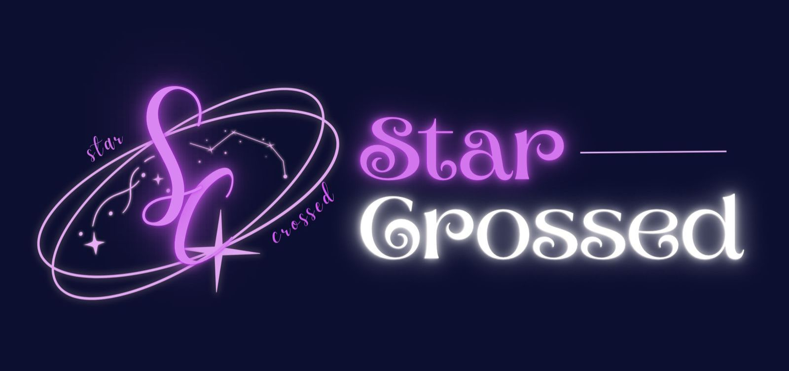

Hi semuanya!! selamat datang di website Star-Crossed :D Kami adalah sekelompok siswa yang terdiri dari empat anggota dengan ide, karakter, dan cara berpikir yang berbeda, namun dipersatukan oleh tujuan yang sama untuk menciptakan karya yang bermanfaat dan kreatif. Star-Crossed melambangkan pertemuan berbagai ide dan harapan yang berbeda menjadi satu tujuan. Orbit menggambarkan perjalanan, bintang melambangkan harapan, dan rasi Pisces menunjukkan hubungan di tengah perbedaan. Warna ungu menjadi simbol kreativitas, imajinasi, dan ambisi kelompok kami. ✨ Terima kasih atas kunjungan dan dukungan Anda. Selamat menjelajahi website kami! ✨🌙⭐